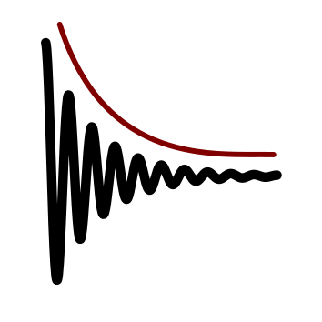
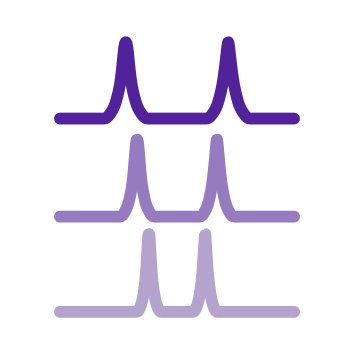
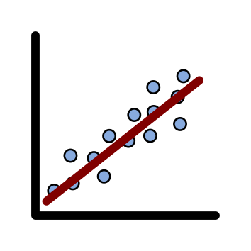
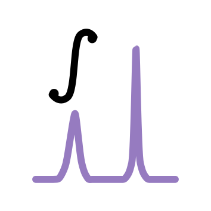
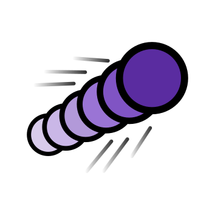
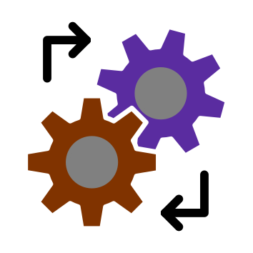
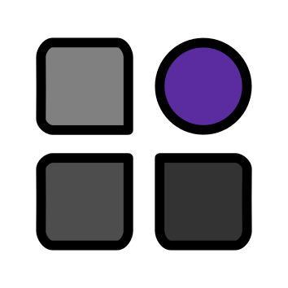
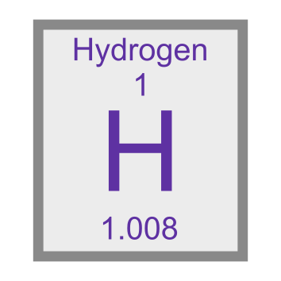

One Place for Everything NMR
openNMR is a free, open-source and vendor-agnostic app for working with your NMR data. No scripting needed. Just gorgeous figures and reliable analysis at the touch of a button.
pip install opennmr
opennmr-guior download the installer for Windows, macOS or Linux.
Every tool in the toolbar has a guide
The buttons along the top of openNMR are the steps of a typical workflow. Pick one to see how it works.
Open
Browse a folder of experiments and load one or several spectra.

Process
Turn raw FIDs into spectra.

Compare
View several spectra side by side.

Fit
Fit your spectra reliably and accurately.

Integrate
Quantify your spectra.

Simulate
Synthesise spectra from your own parameters.

Dynamics
Fit pseudo-2d data and explore the impact of mobility on spectra.

Advanced processing
Specialised processing for more demanding data.

Apply
Delve into advanced methods: eNMR, Imaging and more.

Periodic table
Look up the properties of each nucleus.
Reads your data as it comes off the spectrometer
openNMR reads raw acquisition data, not a vendor's own processed output, so every spectrum is treated the same way whichever instrument it came from.
- Bruker TopSpin
- X-Pulse
- Varian / Agilent
- JEOL Delta
- Magritek Spinsolve
- SIMPSON
What’s new in 0.10 and 0.11
- Fits and simulations in the background, with a queue and a progress window (Ctrl+R), so you can keep working while they run (0.11.0).
- Open experiments as a tree: each spectrum's fits listed beneath it, with a table of every fit's parameters and errors to copy, export to CSV or restore (0.11.0).
- A folder browser that scans in the background, remembers what it found and does not download online-only cloud files to list them (0.11.0).
- A choice of fitting algorithm, including global searches, units in Compare, a pulse calculator, and a blank fit for each new dataset (0.10.2).
- An aMAT spectral filter for weak signals hidden by intense ones at fast MAS, ORCA's orca_pnmr files and .xyz structures in DFT tensors, and vector figures that stay inside their axes in Illustrator (0.10.1).
- Multiplets and J couplings found and named for you (d, dd, sept …), with coupling trees and the line a paper quotes.
- A search box beside the toolbar, autosave with crash recovery, and Stop and Keep Best for a fit that is taking too long.
- Search & Help functions. You can now search for shortcuts and for functions inside the GUI.
New to openNMR?
Start here, then work through the tools above in any order.